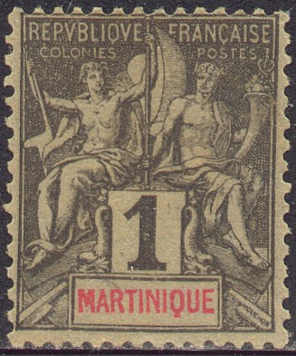
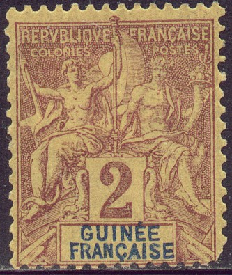
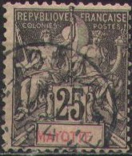
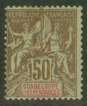
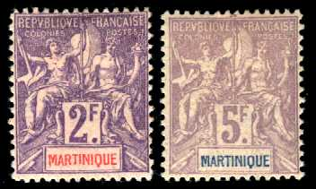
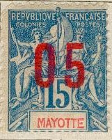
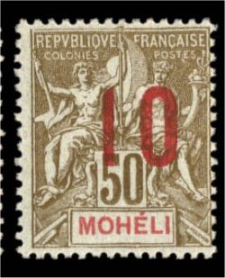

Return To Catalogue - French colonies, general issues - France overview
Note: on my website many of the
pictures can not be seen! They are of course present in the
catalogue;
contact me if you want to purchase it.
The Tablet issue was issued for the following French Colonies: Anjouan (Sultanat d'Anjouan), Benin (Golfe de Bénin or Bénin), Dahomey, Diego Suarez, French Congo (Congo Français), French Guinea (Guinée Française), French Guyana (Guyane), French India (Établissements de l'Inde), French Indo-China (Indo-Chine), French Oceanic Settlements (Établissements de l'Océanie), French Sudan (Soudan Français), Gabon, Great Comoro (Grande Comore), Guadeloupe, Ivory Coast (Côte d'Ivoire), Martinique, Mayotte, Moheli (Mohéli), New Caledonia (Nouvelle Caledonie), Nossi-Be, (Nossi-Bé), Obock, Reunion (Réunion), Senegal (Sénégal), Senegambia and Niger (Sénégambie et Niger), St Marie de Madagascar, St Pierre and Miquelon.
The following values were issued (not all values were issued for each colony):





1 c black on blue 2 c brown on yellowish 4 c brown 5 c green (2 different shades) 10 c black 10 c red 15 c blue 15 c grey 20 c red on yellow 25 c black 25 c blue 30 c brown 35 c black 40 c orange 45 c black 50 c red 50 c brown on blue 75 c lilac 1 F green 2 F violet on red 5 F lilac
Many of these stamps exist with an overprint '05' or '10' in black or red (made in 1912).
These surcharges exist with a variety: more space between '0' and '5' or '1' and '0':


(Left: normal; right: more space between '1' and '0' variety)
Several errors also exist, such as double and inverted surcharges:

(Double surcharged '10' and inverted 'widely spaced 05')
{kind=link}